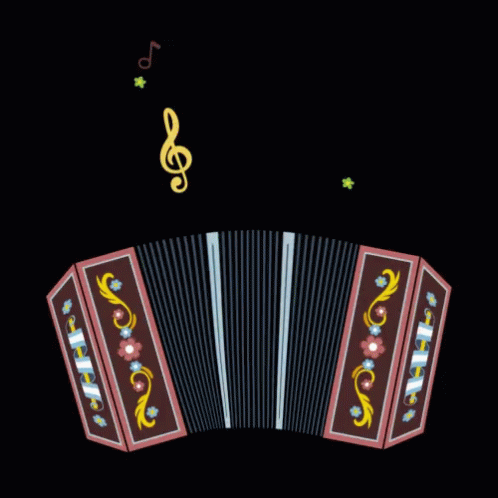

INSTRUMENTOS

Las melodías de estos cantos se interpretaron primero con la flauta de caña de millo o carrizo,
abierta en sus dos extremos con cuatro orificios en su longitud y una lengüeta que forma la embocadura
y pisa un hilo, sostenido por los dientes, para modular el sonido; a ella se sumaron la caja, tambor pequeño
artesanalmente del tronco hueco de los árboles secos y sellado en uno de sus extremos con un pedazo de
cuero templado, y la guacharaca, instrumento ancestral indígena que se fabrica utilizando un pedazo de cañabrava
a la que se le hacen pequeñas ranuras sucesivas para producir un sonido raspativo al ser frotadas con un hueso
(originalmente).
A finales del siglo XIX, décadas después de su invención, el acordeón llegó a Colombia por el puerto de Riohacha;
los vaqueros y campesinos lo incorporaron a sus expresiones musicales, y paulatinamente fue sustituyendo al carrizo
hasta convertirse en el instrumento principal del conjunto típico de vallenato.
Además de estos tres instrumentos, caja, guacharaca y acordeón, que representan la trietnia que dio origen a la raza
y cultura de la Costa Caribe colombiana, el conjunto típico vallenato presenta un cuarto elemento básico que es el cantante
, de más o menos reciente incorporación a raíz de los festivales vallenatos, ya que hasta los años 1960 la costumbre era que
el acordeonero llevaba la voz cantante e interpretara él mismo la letra de las canciones que tocaba.
Acordeón diatónico: Instrumento de origen austriaco, inventado en Viena en su forma actual por Cyrill Demian en 1829
, introducido a Colombia de contrabando por inmigrantes alemanes procedentes de Curazao por Riohacha (en las costas
de La Guajira) en 1885. Quienes lo interpretan lo modifican ellos mismos o lo mandan a modificar con expertos musicales
para que produzca su característico sonido.9
Caja vallenata: Instrumento de percusión de origen africano. Se trata de un tambor pequeño cuyo parche se fabricaba
de buche de caimán, luego de piel de marimonda negra y, actualmente, de cuero de chivo, venado o carnero. El vaso se
hace de un tronco de árbol hueco de 40 cm de alto y 30 cm de diámetro. El árbol debe ser de tronco fibroso
como macurutú, cañaguate o matarratón.10
Guacharaca: Instrumento cóncavo de fricción autóctono de los indígenas colombianos de 40 cm de largo,
elaborado con el tallo de la uvita de lata. Su nombre proviene de la ortalis columbiana o pava silvestre,
ave de monte cuyo canto es similar al sonido que produce el instrumento.10 También se utiliza en su lugar
el guache.